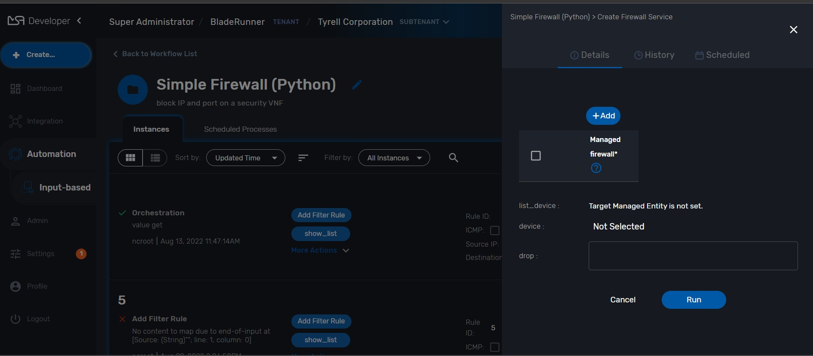
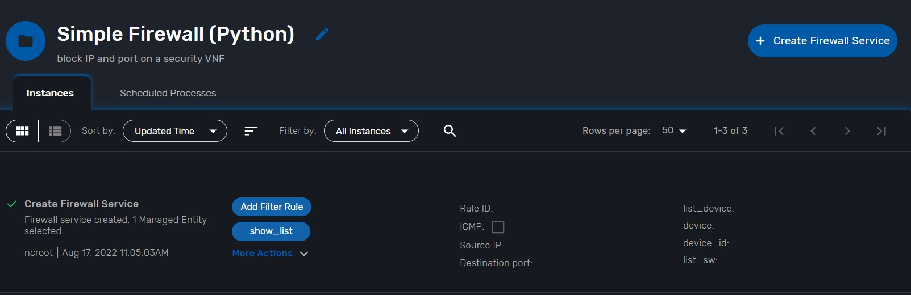
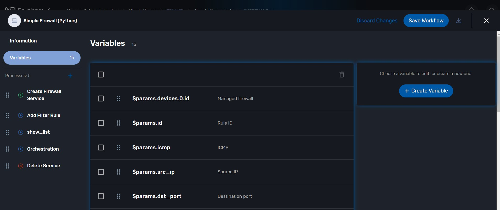
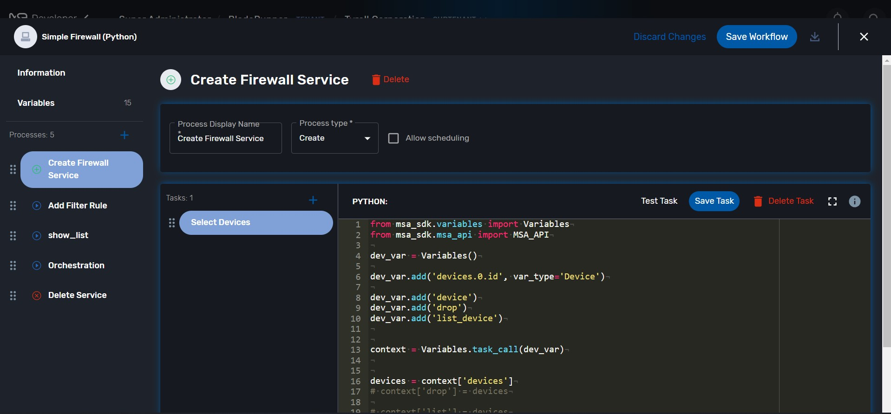
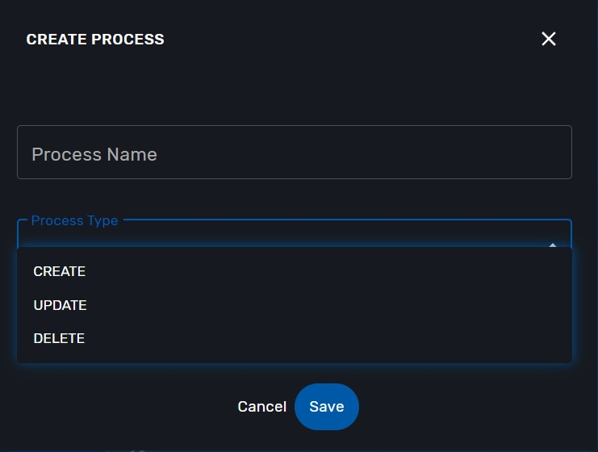

WF Knowledge
This section describe knowledge of Workflow.
contents:
Before you debugging WF
Make sure you selected in SUBTENANT
Click SUBTENANT MENU

Debugging
Chose WF you want to debugging
If you don't have WF, please create the new one in here.
Click + Create Firewall Service

Fill example data and click in Run

Processes run successful
 New Instances created
New Instances created

Structure
WF has 3 parts:
1.Information
 2.Variables
2.Variables
 3.Processes

In Processes, we have 3 type Processes is UPDATE, CREATE, DELETE.
